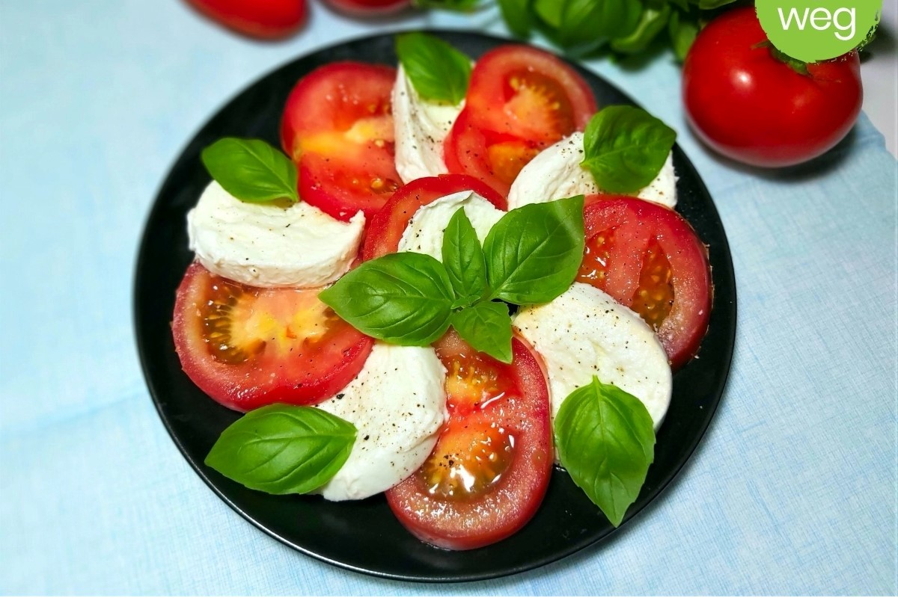

Składniki na 1 porcję
- 1 średni pomidor
- 50 g mozzarelli
- 2 liście bazylii
- 1 łyżka oliwy z oliwek
- Szczypta soli i pieprzu
Przygotowanie
- Pokrój pomidora i mozzarellę w plastry.
- Ułóż na talerzu naprzemiennie plastry pomidora i mozzarelli.
- Skrop oliwą z oliwek, posyp solą i pieprzem.
- Udekoruj listkami bazylii i podawaj od razu.